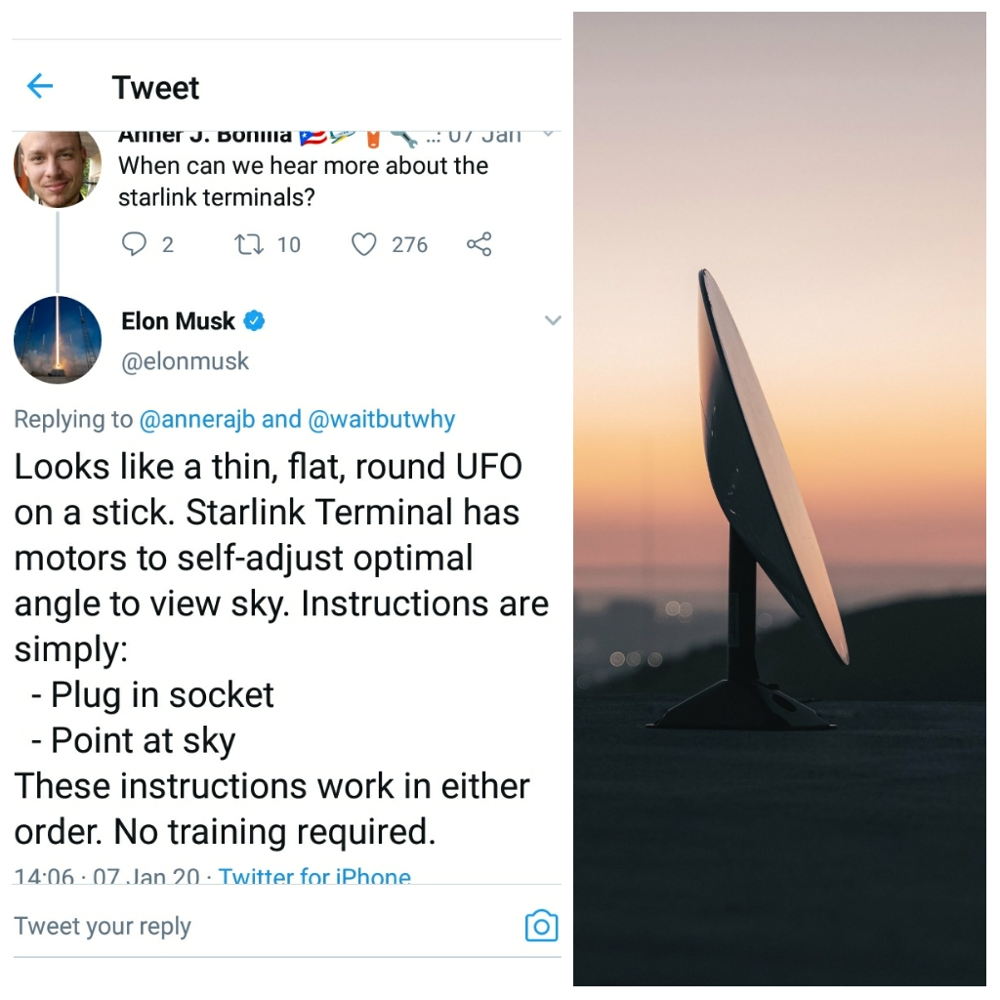

The New Internet: Starlink, connecting the stars
 Author: Hadzah, Emmanuel. 20th September,
2020.
Author: Hadzah, Emmanuel. 20th September,
2020.
How do we connect these people to the internet? First, for one to get access to the internet, one get subscribed to the internet through Internet Access Providers (ISPs) which provides you gateway to the internet. The internet access gateways are of two main types: Dial-Up ( They are cheap but are rare, because they are slower than the other ISP options) and Broadband( meaning high-speed) internet. Where examples of Broadband internet access are: DSL (Digital Line Subscribers); Fiber optics, currently the fastest broadband; Cable broadband, uses coaxial cables; Wireless broadband, provides both fixed satellite broadband and mobile broadband access (2G, 3G, 4G, LTE, 5G). Many options for internet users to chose from. But from all of these, the most promised technology is the satellite broadband internet gateway.
Satellite broadband looks very promising and becomes more promising when executed by the right company, due to it huge expenses in launching satellites to space, technical expertise, tough decisions to envision a more reliable, fast, cheap and global satellite broadband for the world. Elon Musk SpaceX company is one of the best candidates to achieve these feat.
With Starlink satellites about 514.99 kilometers closer to the earth than their other competitors satellites. Starlink will beam data across the globe close to the speed of light. One will connect to the internet the same way as Satellite broadband companies serve their users by making them install satellite dish to their homes, work places, shops, etc then you can choose to distribute it in your home or local community by using a Wi-Fi as an hotspot to your mobile phones and other smart devices.  Starlink having a difference with their kind of satellites to use. Starlink is currently rolling out service in the Northern U.S., Canada and expand and global coverage of the populated world by 2021.